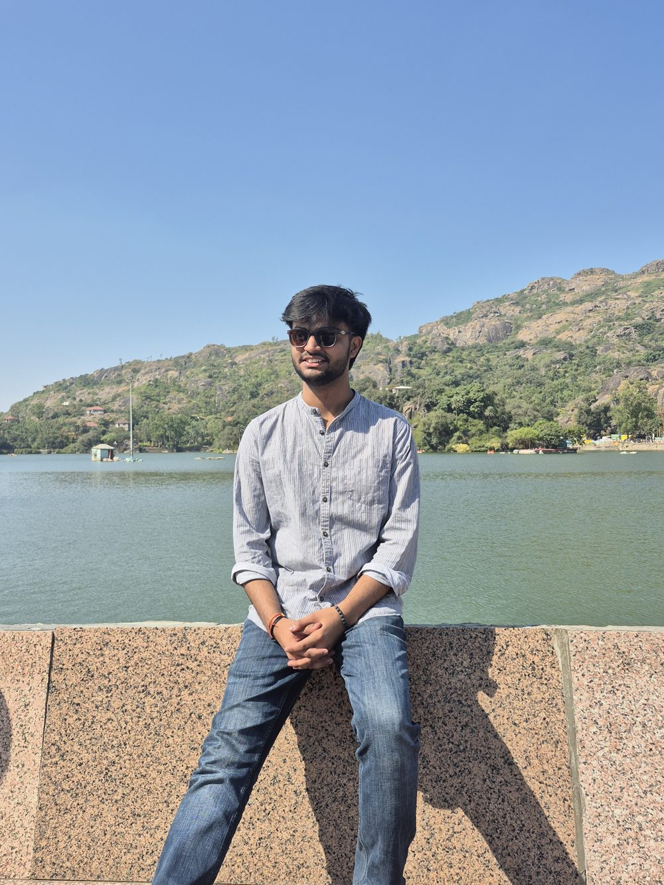
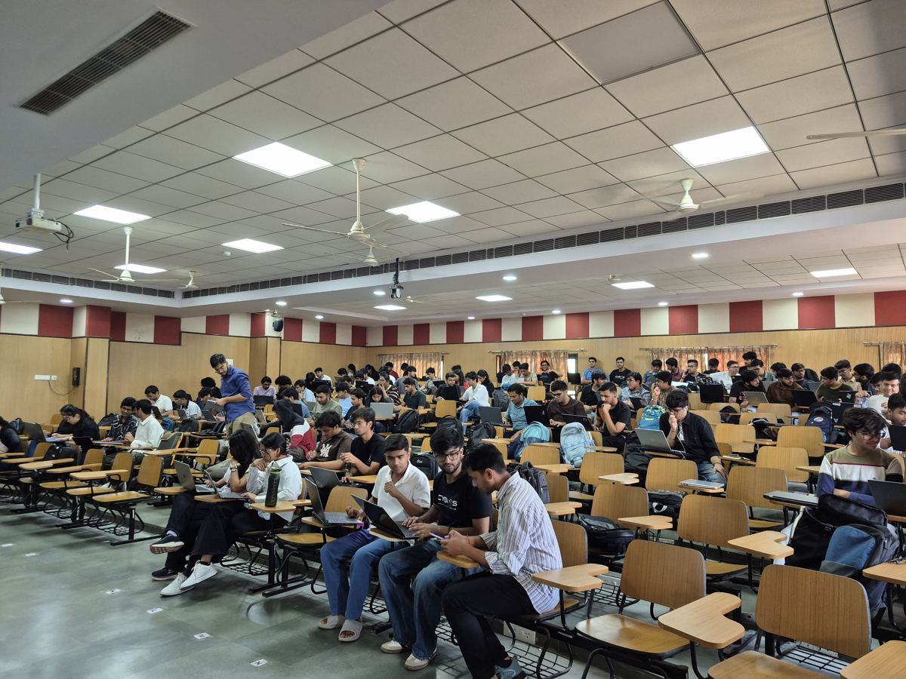
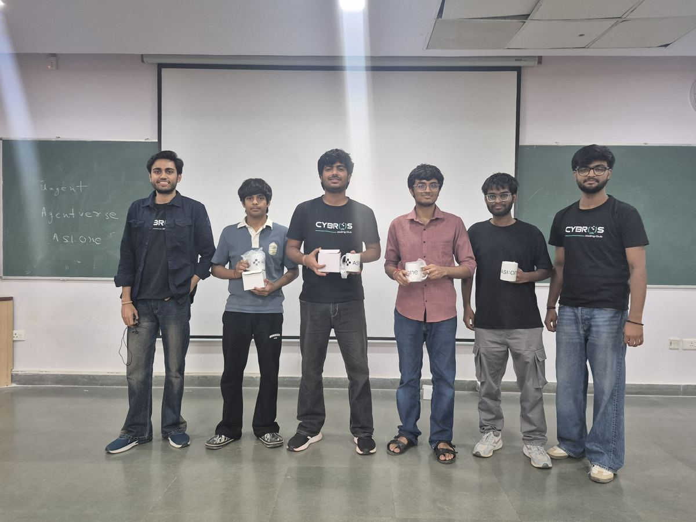
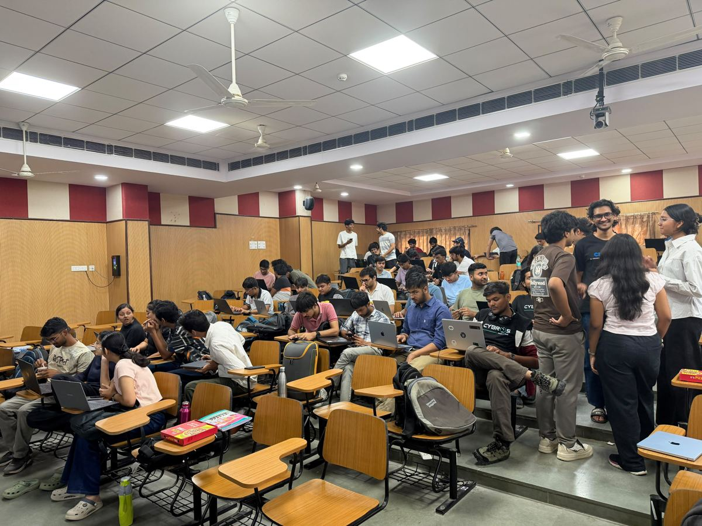
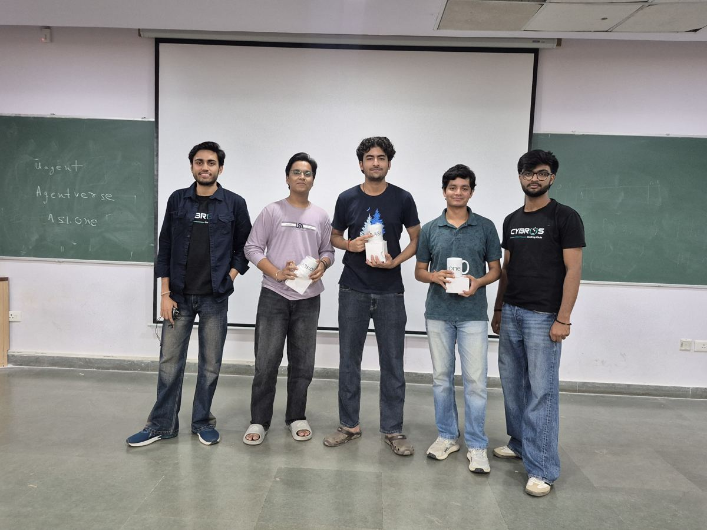
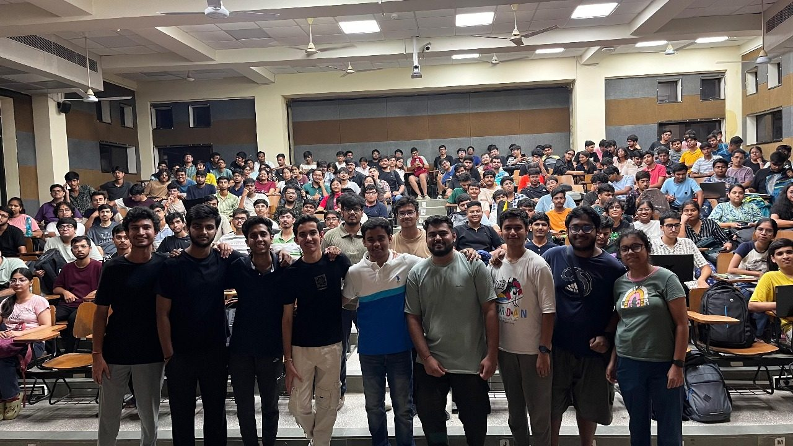
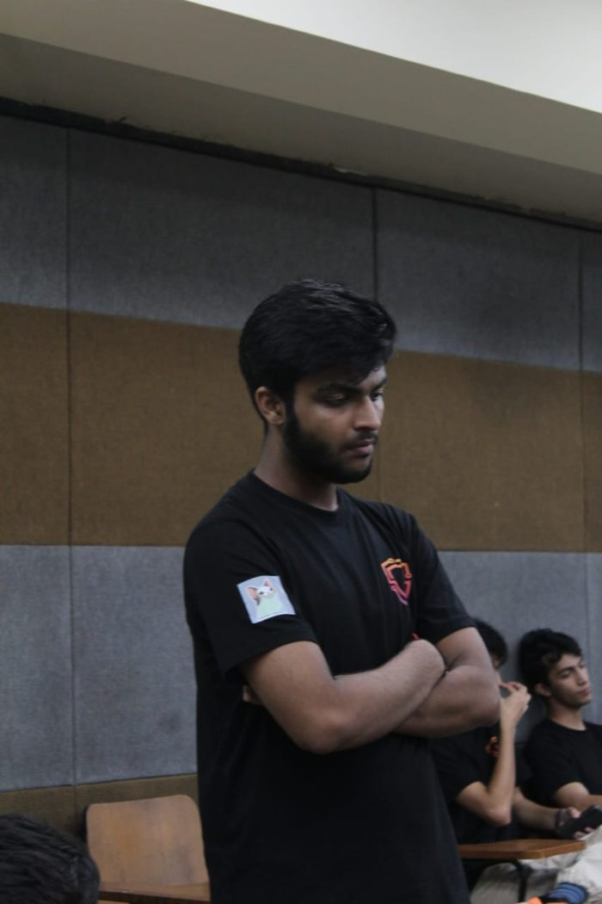

Karun Pacholi
I build CI/CD, security pipelines and AI tooling that help open-source maintainers ship faster.
DevOps Lead at AOSSIE for GSoC 2026, working across its 300+ repositories. Researching how AI coding agents open overlapping pull requests. B.Tech CSE at LNMIIT, Jaipur.

#What I'm doing now
- BuildingOrg-wide CI/CD, DevSecOps and contributor tooling at AOSSIE as GSoC 2026 contributor and DevOps Lead.
- ResearchIntent-level overlap among AI-agent pull requests: PRs that do the same thing with no git conflict, and whether small local models (3B–8B) can catch them. Built on PR Dashboard.
- CommunityStarting the AAIF Jaipur chapter (Agentic AI Foundation, Linux Foundation) and coordinating Cybros OSDC at LNMIIT.
- LearningDSA, operating systems, DBMS, computer networks, distributed systems.
- Looking forInternships in SDE, DevOps/DevSecOps, platform or AI engineering, and paid open-source programs.
#Journey
LinkedIn →- MAY 2026 – PRESENT
GSoC'26 Contributor & DevOps Lead
AOSSIE · Google Summer of Code- Org-wide CI/CD, repository automation and DevSecOps checks (CodeQL, OpenSSF Scorecard, Gitleaks, OSV-Scanner).
- Built GitPay: contributor payouts as a GitHub Action, triggered by maintainer PR comments.
- Built Skill Bot, Skill Updater and PR Dashboard for maintainers.
- JAN 2026 – APR 2026
LFX Mentee
Magma · Linux Foundation- Built reproducible Magma dev environments across operating systems with Vagrant, VirtualBox, Linux, Bash and Docker.
- Ran 3GPP end-to-end tests of the 5G/LTE core (UERANSIM, srsRAN, Wireshark).
- Wrote setup, workflow, troubleshooting and onboarding docs.
- JAN 2026 – MAR 2026
Blockchain Developer · Rootcamp
Rootstock Labs- Selected for a 12-week Builder Rootcamp; finished in the top 20 builders.
- Testing, debugging and security auditing in CI/CD pipelines; shipped a solution on Rootstock.
- FEB 2025 – PRESENT
Open Source Project Maintainer
AOSSIE- Core maintainer of SocialShareButton; co-maintainer of Template-Repo, AutoInitialIssues and Skills.
- PR review, issue triage and CI/CD for contributors, including GSSoC'26 contributors.
#Start here
Open-source maintainer
Maintaining since Feb 2025#Featured projects
GitHub →#Recent merged PRs
Full list →- …Loading from GitHub data…
auto-updated every Monday by a GitHub Action
#Building in public
All posts →Introducing GitPay v1.1.0
Contributor payouts inside GitHub Actions: maintainers pay from a PR comment, with authorization policies and non-custodial execution.
Fetch-A-Thon 3.0 came to LNMIIT
Recap of the AI agent hackathon we hosted in Jaipur on 24 October.
Week 1 of XOps (now GitPay)
Why settlement is the last manual step in the delivery pipeline, and why I shipped it as a GitHub Action instead of a hosted service.
#Community
Fetch-A-Thon 3.0 at LNMIIT, Jaipur
Cybros – LNMIIT hosted the Jaipur campus of Fetch-A-Thon 3.0, a nationwide AI agent hackathon with Fetch.ai Innovation Lab, run on the same day across six campuses with a ₹1,00,000 prize pool. Before it, we ran the session "Exploring Autonomous AI with Fetch.ai". Recap post ↗





#Recognition
#About me

I'm a Computer Science student at LNMIIT, Jaipur (B.Tech, started 2024). I started in open source with AOSSIE in 2025 and have been maintaining AOSSIE projects since February 2025.
Before GSoC, I was an LFX mentee at Magma (Linux Foundation) and a Rootstock Rootcamp builder.
In GSoC 2026 I joined AOSSIE as a contributor and became its DevOps Lead. I brought the DevOps side to AOSSIE: shared templates, reusable GitHub Actions, and security checks like CodeQL, OpenSSF Scorecard, Gitleaks and OSV-Scanner across the org.
My way of working: first find everything the community has already solved, then design how the pieces connect, then automate it with CI/CD and agents. I like tools that make maintainers' lives easier.
Started with Web3 (Rootstock, SUI, Ergo). Now focused on DevOps, platform engineering and AI tooling for developers.
Let's build something
Internships, open-source collaboration, talks or community events — I'm happy to talk.